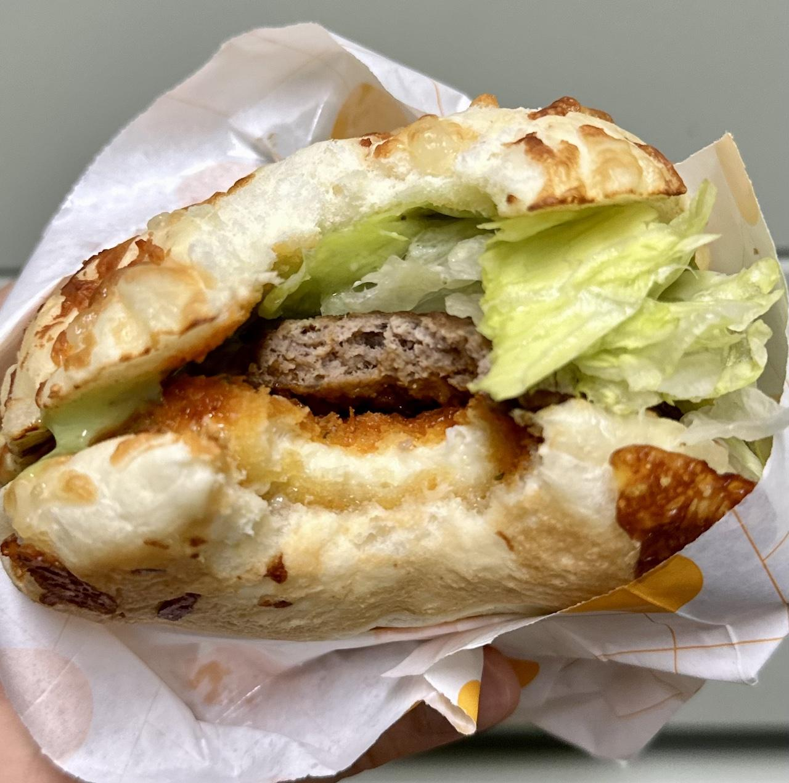

롯데리아의 나폴리맛피아 모짜렐라버거(토마토바질)에 대한 기록
개인적으로 흑백요리사를 보기 시작 했을 때 - 이탈리아빠여서 그랬던 건진 모르겠지만 - 나폴리맛피아를 처음부터 끝까지 응원했었는데 결국 최종 우승으로 마무리 되었을 땐 참 뭐라 말할 수 없는 감격이 있긴 했었다. 이 찍기 기세면 앞으로 로또 1등 정돈 되겠지? 뭐 곁다리인 이야기이니 넘어가자.
롯데리아에서 나폴리맛피아를 내세운 신메뉴를 공개했다니 먹으러 가야 할... 입장 같은 건 없었고 그냥 점심 뭐 먹을까 집 근처를 어슬렁거리다 마침 롯데리아 앞을 지나가게 되었고 거기서 나폴리맛피아의 거만한 포즈(?)의 모짜렐라버거 광고판이 보였다. 그 버거가 날 애처로운 눈빛으로 쳐다보는 게 너무 안쓰러워서 집으로 데리고와서 뱃속에 피신시켜 주었다. 나폴리맛피아 무서웠지? 우쭈쭈.
개인적인 평가
바질의 신선함을 담은 바질마요소스에 풍부하고 진한 토마토소스로 맛을 낸 나폴리맛피아식 스페셜 모짜렐라버거
역시나 소개는 미사어구 투성이일 수밖에 없으니 그냥 실제 사진이나 보고 바로 평가에 들어가 보자.
 뱃속에 한 입 피신하고 남은 피자맛 인질들
첫 인상: 롯데리아 치고 나름 푸짐한 비주얼이다. 하지만 아무리 세트라도 1인분 가격이 만 원을 넘는 건 좀 비싸다고 느낄 수밖에 없었다. 참고로 배달이 아니라 직접 테이크아웃한 가격이라 배달로 주문하면 더 비쌀 지도 모르겠다.
식감: 모짜렐라 치즈를 올린 미국식 피자 도우를 오븐에서 구운 걸 번 대신 올린 듯한 식감이었다. 하필 안에 모짜렐라 패티가 또 있어서 치즈가 제법 많이 씹혔다. 다만 고기 패티가 씹히는 느낌과 맛은 잘 안 느껴졌다. 야채가 많아서 사각거리는 식감이 질기고 퍽퍽한 식감을 그나마 죽지 않게 살려주었다. 정리해서 피자와 샐러드를 함께 먹는 식감이었다.
맛: 모짜렐라 치즈를 올린 미국식 피자 도우를 오븐에서 구운 걸 먹는 맛이 많이 느껴졌다. 당연히 번 대신 입에 가장 먼저 닿는 부분이니 어쩔 수 없을 것 같다. 소스는 토마토 소스와 바질페스토가 섞인 듯한 맛 같긴 한데 뭐라 설명하긴 힘들지만 롯데리아 치곤 맛있다고 느껴졌다. 다만 모짜렐라 치즈의 맛이 너무 과한 듯했다. 정리해서 피자와 샐러드를 굳이 함께 먹는 맛이었다.
결론
맛은 있었다. 특히 소스가 취향이었다. 다만 이미 식감과 맛에서 정리했다시피 피자 맛이었다는 문제가 있었는데, 더 큰 문제는 이탈리아식도 아니고 한국화된 미국식 피자를 먹는 느낌만 가득 했었다는 점이다.
그래서 다시 먹을 이유가 없는 것 같다. 왜냐하면 난 햄버거를 먹으려 했던 거지 햄버거 모양의 피자를 먹으려던 것이 아니었으니 말이다. 아무리봐도 이 버거는 정체성이 좀 어정쩡한 느낌이다. 그리고 비쌌고 말이다.
여담으로 우리 동네 주변에선 KFC의 번 맛과 식감을 따라가는 프랜차이즈 햄버거 집이 없는 것 같아 참 아쉽다. 왜 치킨집에서 이렇게 버거를 잘 만드는 지는 잘 모르겠지만 말이다.